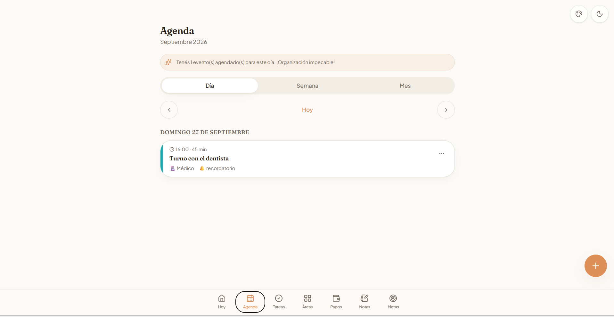
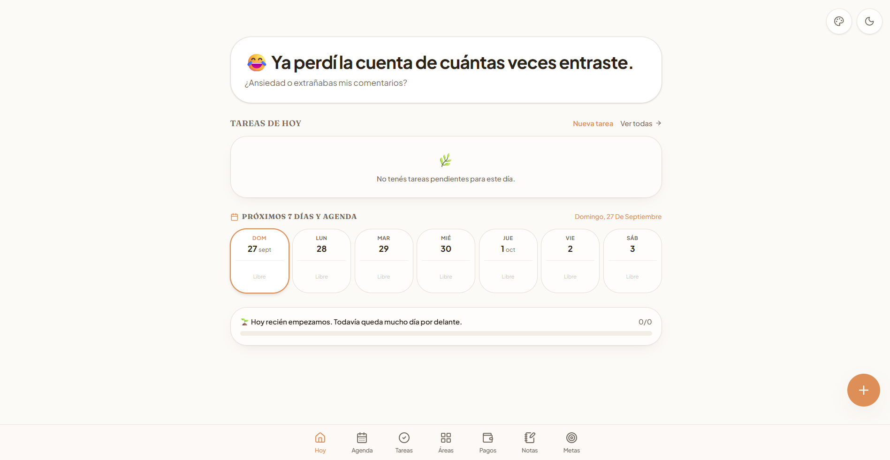
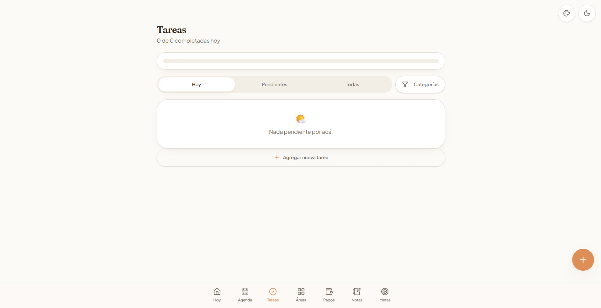
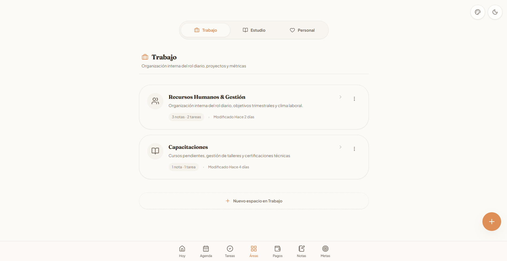
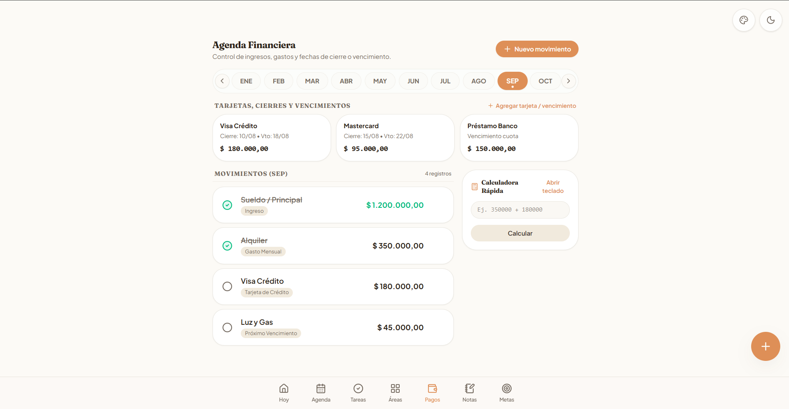
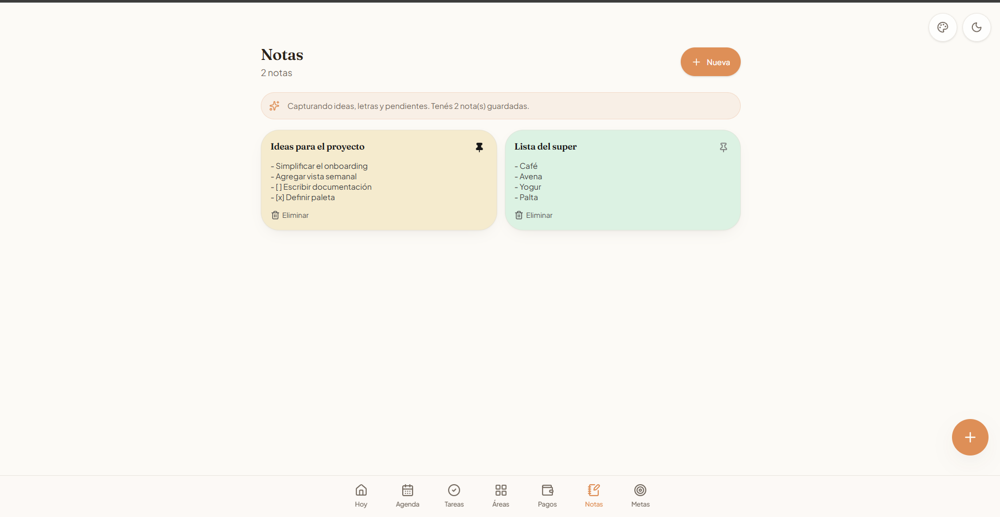
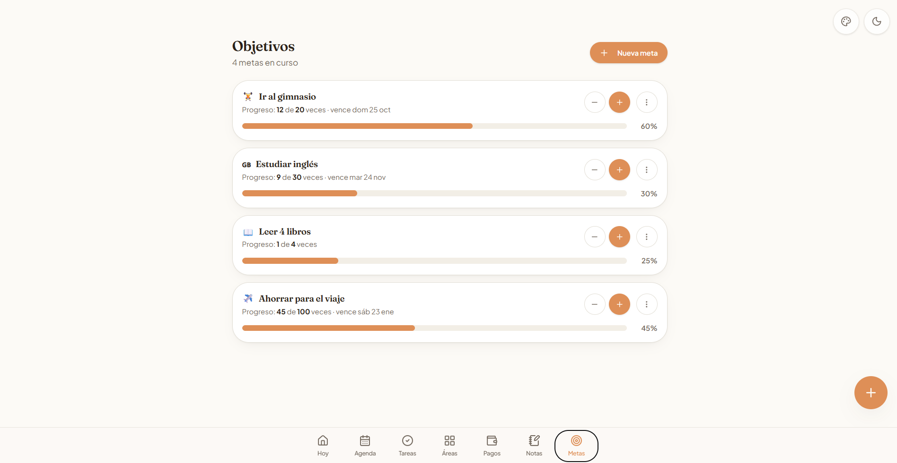

02 · AGENDA
Agenda
Organizá eventos y visualizá el tiempo de una forma clara.

PRODUCTO PROPIO · EN DESARROLLO
Una herramienta para reunir agenda, tareas, notas, finanzas y objetivos en un mismo espacio.

QUÉ ES
Planner reúne distintas áreas de organización personal en una sola experiencia: planificación diaria, agenda, tareas, espacios, finanzas, notas y objetivos.
QUÉ ORGANIZA
RECORRIDO VISUAL
01 · Home. Todo empieza desde la vista general del día que se muestra arriba: lo que necesita atención, los próximos días y los accesos a cada área.
02 · AGENDA
Organizá eventos y visualizá el tiempo de una forma clara.

03 · TAREAS
Separá lo que tenés que hacer y mantené visible lo pendiente.

04 · ÁREAS
Agrupá información según trabajo, estudio o vida personal.

05 · FINANZAS
Registrá movimientos, vencimientos y compromisos del mes.

06 · NOTAS
Guardá ideas, recordatorios y contenido rápido en un mismo lugar.

07 · METAS
Definí objetivos y seguí su progreso.

El producto sigue evolucionando y sumando ajustes de experiencia y organización.
EN DESARROLLO
Proyecto en desarrollo
Contanos el punto de partida y vemos qué tipo de solución puede tener sentido.
Contanos tu proyecto